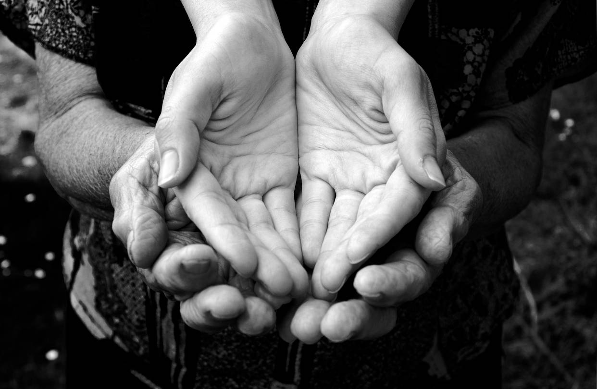

Donate money
YYou can contribute to the provision of basic needs such as food, drink and clothing by contributing a small amount or contributing to the provision of food and household or contribute to the delivery of various types of food and participation with the team hope that they deserve hope and we will be thankful to you.